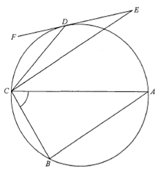

Circle geometry — angles in a circle, tangent & parallel lines

In $\triangle CDE$, the exterior angle at $D$ equals the sum of the two opposite interior angles:
$$\angle DCE = \angle CDF - \angle CED = 49^\circ - 31^\circ = 18^\circ$$
(ext. $\angle$ of $\triangle$)
The angle between the tangent $EF$ and chord $CD$ equals the angle in the alternate segment:
$$\angle CAD = \angle CDF = 49^\circ$$
($\angle$ in alt. segment)
Since $AC$ is a diameter, the angle subtended at $B$ is a right angle:
$$\angle ABC = \angle ADC = 90^\circ$$
($\angle$ in semicircle)
In $\triangle ACD$,
$$\angle ACD = 180^\circ - \angle ADC - \angle CAD = 180^\circ - 90^\circ - 49^\circ = 41^\circ$$
($\angle$ sum of $\triangle$)
$$\angle ACE = \angle ACD - \angle DCE = 41^\circ - 18^\circ = 23^\circ$$
Since $AB \parallel EC$, interior angles on the same side are supplementary:
$$\angle BCE = 180^\circ - \angle ABC = 180^\circ - 90^\circ = 90^\circ$$
(int. $\angle$s, $AB \parallel EC$)
Finally,
$$\angle ACB = \angle BCE - \angle ACE = 90^\circ - 23^\circ = 67^\circ$$